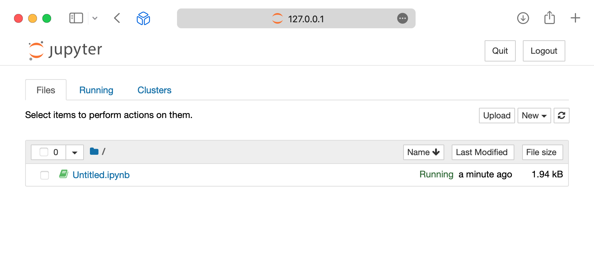
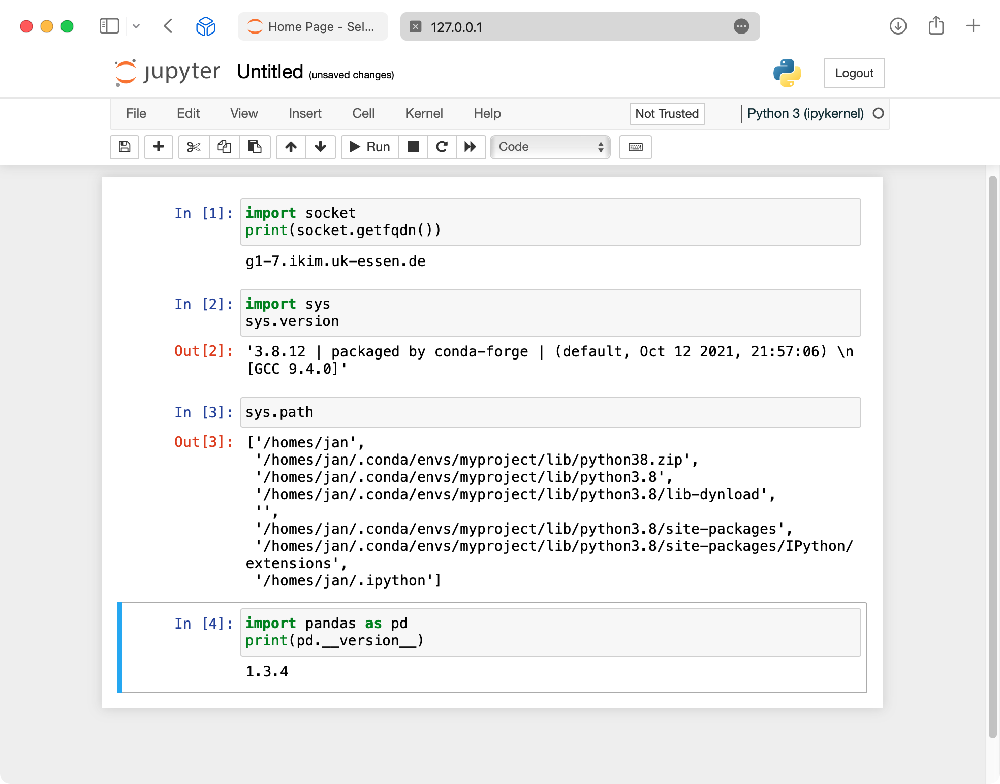

Course · RCC ClusterDocs
Class 9: Python notebooks for large datasets
Recommended starting point · 4 min video
Watch the class first
Safe Jupyter access, large-data patterns, Python tools, reproducibility, and responsible AI exploration. Watch the complete lesson, then use the written page below for copyable commands, exercises, and reference details.
The videos are waiting for publication on the RCC documentation website. This preview deliberately does not link to a local copy or another host. The complete written lesson is available below.
This class teaches a safe pattern for interactive Python analysis on RCC. A notebook is useful for inspection, statistics, and figures. It is not the place to run an overnight computation or keep many gigabytes in memory without limits.
Use VS Code with Remote - SSH as the suggested front end for editing Python, notebooks, environment files, and Slurm scripts. A notebook kernel is separate from the editor: it still runs inside a bounded Slurm allocation.
Learning goals
After this class, you can:
- start JupyterLab only inside a Slurm allocation;
- tunnel the notebook to your workstation without exposing it to the network;
- inspect a large dataset by sampling and summarising instead of loading everything blindly;
- choose between pandas, Polars, DuckDB, Arrow, NumPy, SciPy, and Matplotlib;
- distinguish descriptive analysis, statistical modeling, machine-learning training, validation, and inference;
- measure memory and runtime;
- move expensive work from a notebook into a Slurm batch script.
Before you start
Complete the Class 1 SSH gate and the Class 5 Slurm gate. You need a working SSH client, a valid RCC account, and the ability to submit one small Slurm job.
The RCC notebook rule
A notebook kernel is a normal process. It consumes CPU, memory, local scratch space, and sometimes a GPU. Therefore, on RCC it must run under Slurm:
cp -a examples/interactive-workflows/jupyter my-jupyter-session
cd my-jupyter-session
sbatch jupyter.sbatch
Read the job output file. It shows the worker, the selected loopback port, and the tunnel command. Open only the local address shown by the tunnel. Do not bind a notebook to a public interface and do not disable the token.
The connection sequence is always:
- submit the Jupyter job;
- wait for the job to report its worker, loopback port, token, and tunnel;
- run that tunnel command on your workstation;
- open the local
127.0.0.1address; - stop the Slurm job with
scancel <jobid>when finished.
What the local notebook view looks like
These screenshots come from the earlier ClusterDocs Jupyter walkthrough. They
show the classic Notebook interface rather than the current JupyterLab example,
but they preserve two useful visual checks: the browser address is local
127.0.0.1, and code executes in the remote allocated environment.


The second screenshot contains a former worker hostname, home path, Python version, and example username. Do not reuse those values. Use the worker, port, token, project path, and tunnel printed by your current bounded Slurm job. Never publish the token or include it in a support screenshot.
Reference companions: Account access, SSH, and VS Code contains connection diagnostics. Slurm commands explains how to inspect and stop the notebook allocation.
Large-data pattern
Use this sequence before writing a full analysis:
- Describe the question in one sentence.
- Inspect the file size and format.
- Load a small sample or a small set of columns.
- Summarise groups before plotting.
- Check memory use.
- Save a small reproducible notebook.
- Move full-scale work into a Slurm script.
For tabular data, prefer columnar or chunked access. CSV is portable, but slow for repeated analysis. Parquet, Arrow, DuckDB, or an indexed database table are usually better for repeated interactive work.
Copyable example
The course includes:
examples/interactive-workflows/notebooks/python-large-data.ipynbexamples/interactive-workflows/python/analysis.pyexamples/interactive-workflows/python/python.sbatchexamples/interactive-workflows/python/environment.yml
The notebooks use synthetic data so that you can practice safely. Their RiboSnake-inspired section builds a Bray--Curtis PCoA and a ranked waterfall plot in both Python and R. Run the cells to render the figures; committed notebook outputs stay empty so that results or restricted data cannot be published accidentally. The batch script shows the same idea as a scheduled Slurm job.
Python tool choices
| Task | Suggested tool | Notes |
|---|---|---|
| Small to medium tables | pandas | Good default for teaching and quick work. |
| Larger local tables | Polars or DuckDB | Useful when memory becomes tight. |
| Numerical arrays | NumPy | Keep arrays typed and avoid unnecessary copies. |
| Statistics | SciPy, statsmodels | Record versions and assumptions. |
| Static plots | Matplotlib | Reliable for publication-oriented figures. |
| Interactive exploration | Notebook widgets sparingly | Avoid building long-running web apps in a notebook. |
AI and data science techniques
Use notebooks to inspect data, establish baselines, compare techniques, and explain results. Move full training, large hyperparameter searches, embedding generation, and production inference into bounded batch workflows.
A reviewable machine-learning workflow includes:
- data-quality and missingness checks;
- a subject-safe or time-safe split into training, validation, and test data;
- preprocessing and feature engineering inside the versioned pipeline;
- a simple statistical or machine-learning baseline;
- an evaluation measure chosen before tuning;
- calibration, uncertainty, subgroup behavior, and leakage checks;
- fixed seeds where deterministic behavior is possible; and
- versioned code, environment, parameters, metrics, and model artifacts.
Tree models and regularized regression are often strong tabular baselines. Neural networks and transformers are appropriate when the data type, sample size, and research question justify their complexity. Unsupervised techniques such as clustering, dimensionality reduction, and representation learning need stability checks and scientific interpretation; visual separation alone is not validation.
Use GPUs only when measurement shows that the framework and workload benefit. For larger-than-memory tables, try column selection, Parquet, Arrow, DuckDB, Polars, and chunked processing before introducing distributed computation. Spark-style processing is useful only when its parallelism outweighs network, serialization, scheduling, and operational overhead.
Reference companion: AI and data science on RCC covers technique selection, model development, training versus inference, distributed processing, reproducibility, and responsible-use boundaries.
Good security and reproducibility habits
- Do not paste patient identifiers, tokens, private keys, or passwords into notebooks.
- Do not commit notebook outputs containing restricted data.
- Keep notebooks small enough that another person can review the reasoning.
- Put package versions in
environment.yml. - Use project membership rather than sharing another user account.
- Shut down the Slurm job when you are finished.
Completion gate
Run the local structure check before using the example on RCC:
python3 exercises/interactive/validate-interactive-examples.py
Then start one Jupyter job and confirm three things:
- The job output says the notebook binds to
127.0.0.1. - You can connect through the SSH tunnel.
- You can stop the job with
scancel.
Do not run more than one notebook job for this class.
Self-check questions
- Why is a notebook kernel a Slurm workload?
- Why is a sampled plot safer than loading every row at once?
- What should move from a notebook into a batch script?
- Why should notebook ports bind only to loopback?
- Which files should not be committed to a repository?